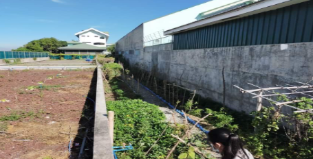
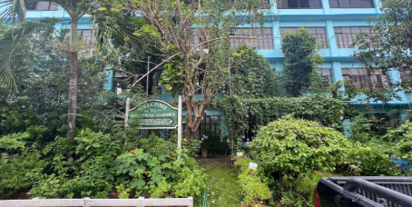
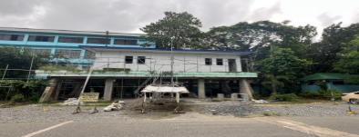

Urdaneta City University (UCU) envisions the Marawi Garden Conservation Facilities as a center for safeguarding plant, animal, and wildlife genetic resources critical for food security, agriculture, and biodiversity in the region. By integrating in situ (on-site) and ex situ (off-site) conservation methods, the garden aims to preserve unique genetic materials while fostering research, education, and community engagement.

The Marawi Garden focuses on conserving local crop varieties and landraces, ensuring resilient and sustainable agricultural practices.
Facilities: A controlled room or structure maintaining optimal temperature (≈15–20°C for tropical species) and humidity, dedicated to storing traditional seeds such as Maranao rice, indigenous legumes, and local vegetables.
Function: Provides an active collection for farmers and researchers, ensuring backup access to seeds and preventing the loss of unique genetic traits.
Facilities: Open field plots, nurseries, and botanical garden sections.
Function: Conserves vegetatively propagated crops (e.g., root crops, bananas, fruit trees) and medicinal plants that cannot be stored as seeds. These living collections allow for ongoing adaptation, research, and community utilization.
UCU emphasizes education, breeding, and collaboration with national agencies to conserve local animal and wildlife diversity.
Facilities: Small animal pens and a laboratory for phenotypic and genotypic analysis.
Function: Characterizes and propagates locally adapted livestock breeds (e.g., poultry, goats) important to the Lanao region. Genetic material may also be preserved for transfer to national cryobanks, supporting small-scale ex-situ conservation.
Facilities: Exhibits and holding areas for rescued native wildlife.
Function: Promotes in-situ conservation through community education and awareness programs. The facility also contributes to conserving genetic diversity and supporting the reintroduction of species into protected habitats.
The Marawi Garden serves as a proactive link between scientific research, policy, and community development.
Long-Term Security: Genetic resources are duplicated and transferred to national genebanks using methods like cryopreservation to protect against local disasters, conflicts, or permanent loss.
Extension and Community Involvement: Facilities integrate environmental education and sustainable livelihood initiatives, fostering ecological stewardship, community empowerment, and responsible management of natural resources.
Through these comprehensive programs, the UCU Marawi Garden not only safeguards critical plant and animal genetic resources but also strengthens local food security, supports biodiversity, and cultivates a culture of conservation and sustainability among students, researchers, and the community.

The Urdaneta City University (UCU) Botanical Garden is a key conservation facility that combines ex-situ (off-site) and in-situ (on-site) strategies to safeguard the genetic diversity of the Cagayan Valley region. Its programs emphasize food security, ecological resilience, and sustainable use of plant and animal genetic resources, providing both research and community benefits.
The Botanical Garden’s core mission is the conservation of unique and locally important plant species, supporting agricultural resilience and research initiatives.
Facilities: Living collections within the garden and nursery plots.
Resources Secured: Perennial crops, indigenous fruit trees, and vegetatively propagated local landraces, such as root crops and bananas.
Function: Serves as an active collection for research, propagation, and community use, ensuring ongoing availability of locally adapted plant material.
Facilities: Climate-controlled storage unit.
Resources Secured: Orthodox seeds of regional food crops, including cereals, legumes, and traditional vegetables.
Function: Acts as the Base Collection, providing long-term, permanent conservation of essential genetic material to prevent loss due to environmental factors or genetic erosion.
The Botanical Garden also plays a supportive role in conserving animal genetic resources and promoting awareness of wildlife protection.
Facilities: Naturalized habitats and forested sections within the garden.
Focus: Maintains a protected ecosystem for local wildlife, particularly invertebrates and avian species, supporting breeding, research, and ecological balance.
Focus: Indirectly safeguards Animal Genetic Resources for Food and Agriculture (GRFA) by promoting sustainable management and utilization of regionally adapted livestock and poultry breeds in surrounding farming communities.
By combining living collections, seed banks, wildlife habitats, and community-oriented programs, the UCU Botanical Garden ensures the preservation of plant and animal genetic diversity, strengthens food security, and nurtures sustainable ecological practices within the region.

The Animal Welfare Building and its associated programs primarily contribute to Animal Genetic Resources for Food and Agriculture (GRFA) and Wildlife Conservation efforts:
Focus: It acts as a hub for the ex-situ conservation of local livestock and poultry breeds (AnGR), which are vital for food security and resilience in the region.
Medium to Long-Term Conservation Facilities: The facility supports the secure storage of animal genetic material via Cryoconservation (deep-freezing of semen, ova, embryos, or tissues). This is the most trusted means for the long-term preservation of a breed's genetic diversity, allowing for its potential reconstitution in case of extinction.
In-vivo/Active Conservation: It also supports the in-situ conservation of live animals, which involves maintaining local, indigenous breeds in their natural environment or in nucleus breeding units for practical use and evolution.
Facilities: The building is a center for animal care, veterinary research, and community extension programs related to animal health and welfare.
Focus: It supports the conservation of local wildlife by providing facilities for rehabilitation, basic triage, and research, aligning with national wildlife protection acts. Its welfare programs promote responsible animal stewardship, which is essential for successful community-based conservation initiatives.
While focused on animals, the research and extension from this facility feed into integrated programs that support the overall sustainability of the local food system, which includes the use of diverse plant genetic resources (PGRFA) for animal feed and ecological stability.